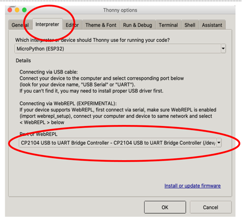
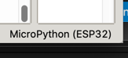

ESP32 TTGO
Step 1: Install the USB to UART Bridge VCP Drivers
Follow the directions here:
https://www.silabs.com/developers/usb-to-uart-bridge-vcp-drivers
Test this by running the ``ls -l /dev/cu*``` and verify you see:
/dev/cu.SLAB_USBtoUART
If you don't see this try to reboot.
Mac:
https://docs.espressif.com/projects/esp-idf/en/latest/esp32/get-started/establish-serial-connection.html
https://github.com/loboris/MicroPython_ESP32_psRAM_LoBo/raw/master/MicroPython_BUILD/firmware/MicroPython_LoBo_esp32_all.zip
Step 2: Create a Python Conda Environment for ESP32
This is so we don't mess up other Python projects on your system.
| conda create -n esp32 python=3
conda activate esp32
|
| $ pip3 install esptool
Collecting esptool
Downloading esptool-3.0.tar.gz (149 kB)
|████████████████████████████████| 149 kB 2.9 MB/s
...
Installing collected packages: pycparser, six, cffi, reedsolo, pyserial, ecdsa, cryptography, bitstring, esptool
Successfully installed bitstring-3.1.7 cffi-1.14.5 cryptography-3.4.6 ecdsa-0.16.1 esptool-3.0 pycparser-2.20 pyserial-3.5 reedsolo-1.5.4 six-1.15.0
|
Step 4: Erase the Old Firmware
| esptool.py --port /dev/cu.SLAB_USBtoUART erase_flash
|
Step 5: Download the New Firmware
Get the ESP32_All prebuilt binary:
https://github.com/loboris/MicroPython_ESP32_psRAM_LoBo/wiki/firmwares
Step 6: Reflash the new ESP32 Firmware
| cd esp32_all/
../flash.sh -p /dev/cu.SLAB_USBtoUART
|
this will run...
1
2
3
4
5
6
7
8
9
10
11
12
13
14
15 | $ esptool.py --port /dev/cu.SLAB_USBtoUART erase_flash
esptool.py v3.0
Serial port /dev/cu.SLAB_USBtoUART
Connecting........_
Detecting chip type... ESP32
Chip is ESP32-D0WDQ6 (revision 1)
Features: WiFi, BT, Dual Core, 240MHz, VRef calibration in efuse, Coding Scheme None
Crystal is 40MHz
MAC: 24:62:ab:ca:62:84
Uploading stub...
Running stub...
Stub running...
Erasing flash (this may take a while)...
Chip erase completed successfully in 2.5s
Hard resetting via RTS pin...
|
You must configure Thonny to use the ESP32.
Set the Serial Port
First, you must tell Thonny how to find the right port.

Set the Interpreter
Next, yo must tell Thonny to use the ESP32 interpreter.

Run a test
1
2
3
4
5
6
7
8
9
10
11
12
13
14
15
16
17
18 | import machine, display, time, math, network, utime
tft = display.TFT()
tft.init(tft.ST7789,bgr=False,rot=tft.LANDSCAPE, miso=17,backl_pin=4,backl_on=1, mosi=19, clk=18, cs=5, dc=16)
tft.setwin(40,52,320,240)
for i in range(0,241):
color=0xFFFFFF-tft.hsb2rgb(i/241*360, 1, 1)
tft.line(i,0,i,135,color)
tft.set_fg(0x000000)
tft.ellipse(120,67,120,67)
tft.line(0,0,240,135)
text="CoderDojo Rocks!"
tft.text(120-int(tft.textWidth(text)/2),67-int(tft.fontSize()[1]/2),text,0xFFFFFF)
|
You should see the following on the ESP32 display:

References
https://www.instructables.com/TTGO-color-Display-With-Micropython-TTGO-T-display/